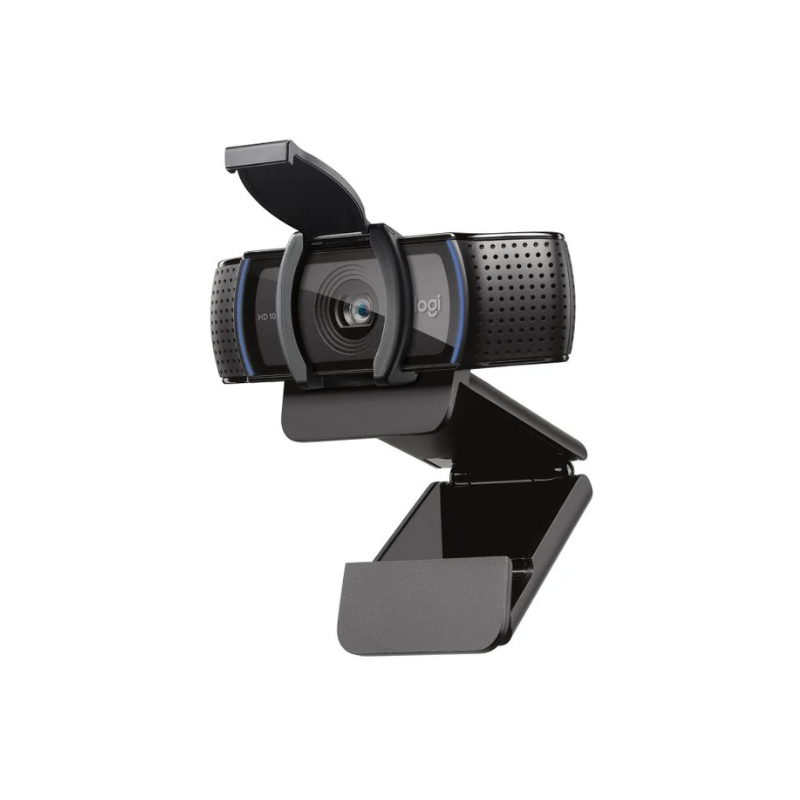

← 全部指南
Best Budget Webcam 2026: What 4 Reviewers Agree On
基于 4 个 YouTube 测评聚合 · 更新于 2026-10-03

Logitech C920s Pro HD
Recommended by 4 out of 4 reviewers as the reliable workhorse: 1080p30, privacy shutter, and plug-and-play stability in every streaming app.
📊 对比一览
| # | 产品 | 推荐度 | 适合 | 价格 |
|---|
| 1 | Logitech C920s Pro HD | 4/4 reviewers | Best overall budget pick | $59-$79 |
| 2 | Logitech Brio 100 | 2/4 reviewers | Cheapest 1080p from a big brand | $29-$49 |
| 3 | Razer Kiyo Pro | 2/4 reviewers | Best low-light on a budget | $99-$199 |
| 4 | Anker PowerConf C300 | 1/4 reviewers | Best AI framing under $130 | $99-$129 |
💬 测评共识
共同优点
- Logitech C920s Pro HD: universal plug-and-play reliability across OBS, Streamlabs, and all platforms (4/4 mention)
- Logitech C920s Pro HD: built-in privacy shutter at a budget price (3/4 mention)
- Logitech Brio 100: cheapest name-brand 1080p with a privacy shutter (2/4 mention)
- Razer Kiyo Pro: 60fps and low-light performance unmatched under $150 (2/4 mention)
共同缺点
- Logitech C920s Pro HD: 30fps cap shows next to 60fps cameras (3/4 mention)
- Logitech Brio 100: fixed focus and grainier image than premium cams (2/4 mention)
- Anker PowerConf C300: companion software is basic compared to rivals (1/4 mention)
🔍 详细解析
Logitech C920s Pro HD
🛒 去 Amazon 购买 →The unanimous budget pick: sharp 1080p30, automatic light correction, privacy shutter, and it just works in OBS and every streaming app.
Resolution: 1080p
FPS: 30
FOV: 78 degrees
Focus: Autofocus
Microphone: Dual stereo mics
适合：Best overall budget pick · $59-$79
Logitech Brio 100
🛒 去 Amazon 购买 →Best-value 1080p webcam with privacy shutter and RightLight auto-light balance; fixed focus is the main tradeoff.
Resolution: 1080p
FPS: 30
FOV: 58 degrees
Focus: Fixed
Microphone: Single mic
适合：Cheapest 1080p from a big brand · $29-$49
Razer Kiyo Pro
🛒 去 Amazon 购买 →A stretch pick at ~$100: 1080p60, Sony STARVIS sensor, and three fields of view make it the streaming specialist in this tier.
Resolution: 1080p
FPS: 60
FOV: 80/90/103 degrees selectable
Focus: Autofocus
Microphone: Stereo mics
适合：Best low-light on a budget · $99-$199
Anker PowerConf C300
🛒 去 Amazon 购买 →1080p60 with AI-powered auto framing, flexible 78/90/115-degree FOV options, and dual noise-cancelling mics.
Resolution: 1080p
FPS: 60
FOV: 78/90/115 degrees selectable
Focus: Autofocus
Microphone: Dual stereo mics with noise cancellation
适合：Best AI framing under $130 · $99-$129
📺 视频来源
展开查看 4 个测评视频
📺
Slope Reviews (hands-on video review roundup) — Best Webcam for Streaming Under $200 2026
观看视频 / Watch📺
ReviewAtlas — Is Which Webcam should I buy Worth It? Honest Review (2026)
观看视频 / Watch📺
OBSBOT (blog review with embedded video tests) — 8 Best Webcams for Streaming 2026 (Twitch, YouTube, Zoom)
观看视频 / Watch📺
Of Zen and Computing (video-style tested review) — 10 Best Webcams for Game Streaming (September 2026)
观看视频 / Watch